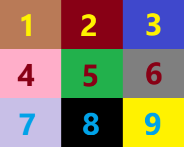

Il concetto di sprite non è strettamente legato al CSS, ma è utilizzato anche in questo ambito;
Uno sprite combina all'interno di una singola immagine più grande un gruppo di immagini più piccole
di modo che, invece di effettuare una richiesta e un caricamento per ogni singola immagine,
si effettui una singola richiesta e caricamento;
dell'immagine grande vengono poi rappresentate solo le porzioni che identificano le immagini più piccole
Consideriamo l'immagine sprite:
Sappiamo (perché l'abbiamo creata noi) che l'immagine sprite
è composta di tre icone quadrate da 77px;
Consideriamo quindi dei contenitori da 77×77 per le icone dello sprite
e usiamo la proprietà background-position per spostare lo sprite nel background
del contenitore, in modo da inquadrare l'icona corretta:
l'immagine sprite è rappresentata in ciascun contenitore;
viene rappresentata l'icona scelta solo inquadrandola con precisione scorrendo il background
per ridimensionare le icone dev'essere ridimensionata l'immagine sprite originale e
vanno corrette le proprietà background-position di ciascuna per
adattarsi alla nuova dimensione
è il background ad essere spostato dietro il contenitore, per
questo i valori in background-size sono dati in negativo:
per scorrere sull'icona a destra nello sprite, dobbiamo spostare il background a sinistra
possiamo anche usare l'attributo data-
per indicare uno sprite e il suo valore per indicare quale immagine dello sprite fornire
Responsività
Gli sprite sono tipicamente usati per contenere tante piccole immagini necessarie
alla pagina in modo da ottimizzare la performance, tuttavia possono essere macchinosi
da usare, soprattutto se non è possibile ridimensionarli.
Per poter creare immagini responsive a partire da sprite abbiamo necessità di
fare alcuni accorgimenti:
- le dimensioni dello sprite devono scalare assieme al contenitore
- le proporzioni dello sprite e delle singole immagini devono preservarsi
- lo scorrimento del background deve scalare assieme allo sprite
Ridimensioniamo le immagini in modo dinamico:
Osserviamo che
- lo sprite è ridimensionato in modo che ogni immagine dello sprite
coincida con le dimensioni del contenitore
- le dimensioni effettive del contenitore sono irrilevanti
poiché
aspect-ratio mantiene le proporzioni
- lo sprite è traslato della lunghezza delle celle per scalare assieme allo sprite
Possiamo creare uno schema responsivo più generale:
con questo schema possiamo modificare le variabili
--row e --col
per scegliere la cella dello sprite:
Consideriamo questa immagine:

Applichiamo lo schema precedente,
proviamo a percorrerla:
Bleeding
In alcuni casi, soprattutto per immagini piccole o ridimensionate,
è possibile che avvenga il bleeding:
Il bleeding si verifica quando il bordo di un'immagine "sanguina"
dentro quello accanto, cioè quando il browser mostra una sottile
linea di pixel sbagliati (provenienti dal frame vicino nello sprite).
Per risolvere questo inconveniete è buona pratica lasciare un piccolo margine
trasparente tra le immagini dello sprite
Schema di Sprite a Griglia
Ammesso di poter dividere lo sprite in una griglia di righe
e colonne uniformi, possiamo applicare questo schema:
rimane relativo anche il gap immesso per evitare il bleeding
 bisogna però lasciare anche dello spazio a fine sprite (sia a fine colonne che fine righe),
per evitare bleeding tra le prima e le ultime immagini di una colonna/riga
dovuto alla proprietà
bisogna però lasciare anche dello spazio a fine sprite (sia a fine colonne che fine righe),
per evitare bleeding tra le prima e le ultime immagini di una colonna/riga
dovuto alla proprietà background-repeat
lo schema precedente tiene conto anche di un gap
per prevenire il bleeding;
se questo non è necessario se ne può usare uno più semplice: